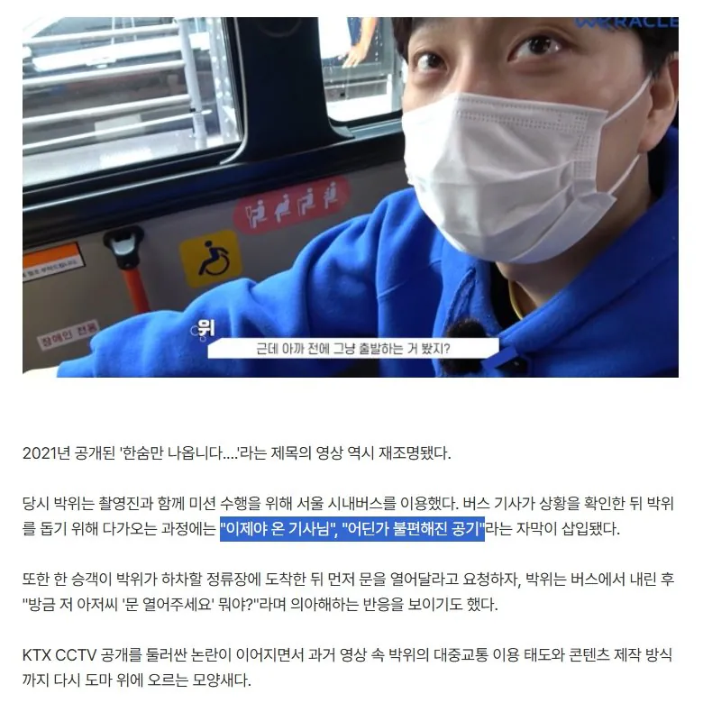

https://m.entertain.naver.com/home/article/312/0000773699
뒤에 카메라맨도 있는데 카메라맨은 아무것도 안하고 그냥 저걸 찍고만있음 ㅋㅋㅋㅋㅋ
도와주는 시늉도 안함 ㅋㅋㅋㅋㅋㅋㅋㅋㅋㅋ 근데 시민들, 기사님들한테는...

https://m.entertain.naver.com/home/article/312/0000773699
뒤에 카메라맨도 있는데 카메라맨은 아무것도 안하고 그냥 저걸 찍고만있음 ㅋㅋㅋㅋㅋ
도와주는 시늉도 안함 ㅋㅋㅋㅋㅋㅋㅋㅋㅋㅋ 근데 시민들, 기사님들한테는...
원샷한솔은 안보이는데도 혼자 찍고 혼자 타던데..
완전 박위하고 있네. 전장연 차기 유력 회장감이다
눈이 갔어
박위 상태네
기사가 와서 도와주고 확인하고 가야하는게 맞는거 아임?? 메뉴얼이ㅜ어캐 돼잇지?
나는 이 친구 선천적인거던가 불의의 사고로 장애인된 줄 았는데
그냥 술마시고 추락한거드만
럭키전장연인가 좀 안타깝다....ㅠㅠ
타인의 도움은 당연한 것이 아니며 받는다면 감사해야 한다
이 간단한 것을
좀 불쾌하고 화가나고 그러네
와 이게 저거 도와주는 사람이 더 ㅈ같을수밖에 없는게 옆에서 안도와주고 영상찍고 있겠구나 ㅋㅋ 그러니 있던 표정도 사라질듯

그냥 럭키 사회실험 유튜버잖아